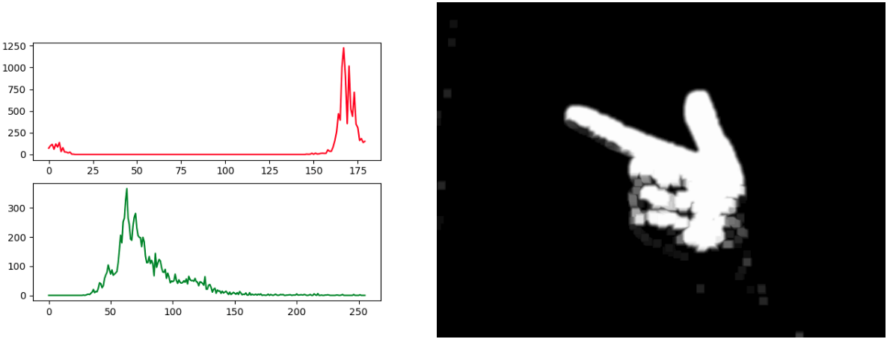

The main objective of this project was to develop an algorithm to locate and track the index fingertip and thumb tip accurately as well as to differentiate between the armed and shooting hand configurations.
For the first part of the objective, color segmentation was used in the HSV color-space to obtain a skin mask. To achieve this, the player orients their hand so that it completely fills a green box that appears at program startup. The pixel values within the box are then used to generate Hue (red) and Saturation (green) histograms like shown in the bottom left figure. In this particular case, a mask was created to allow all pixels with a hue between 158-180, a saturation between 35-62, and any Value to be depicted while blocking all other pixels. Then, to get rid of noise, a Gaussian blur was performed followed by erosion. Finally, the image was dilated twice to fill in any holes that might be in the hand. The resulting image can be seen in the figure on the bottom right.

For the second part of the objective, OpenCV's cv2.findContours and cv2.convexHull functions were used to find the exact outline of the hand (green in the demo) and the outer boundary of the hand (blue in the demo). With the first function, the centroid of the hand (blue circle) can be calculated. Then, the index fingertip and thumb tip can be tracked by iterating through the points that make up the convex hull and locating the one that is the furthest (index fingertip) and second furthest (thumb tip) from the centroid. By taking the ratio of the thumb tip to the centroid and the index fingertip to the centroid, it is possible to perform gesture detection. In the armed position, the ratio is larger than in the shooting position.
To learn more about the project, click here to see the GitHub repo and access the README.